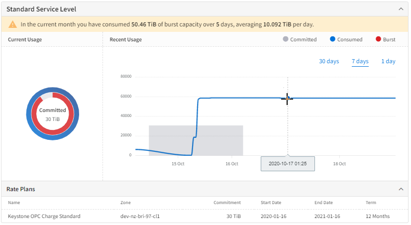
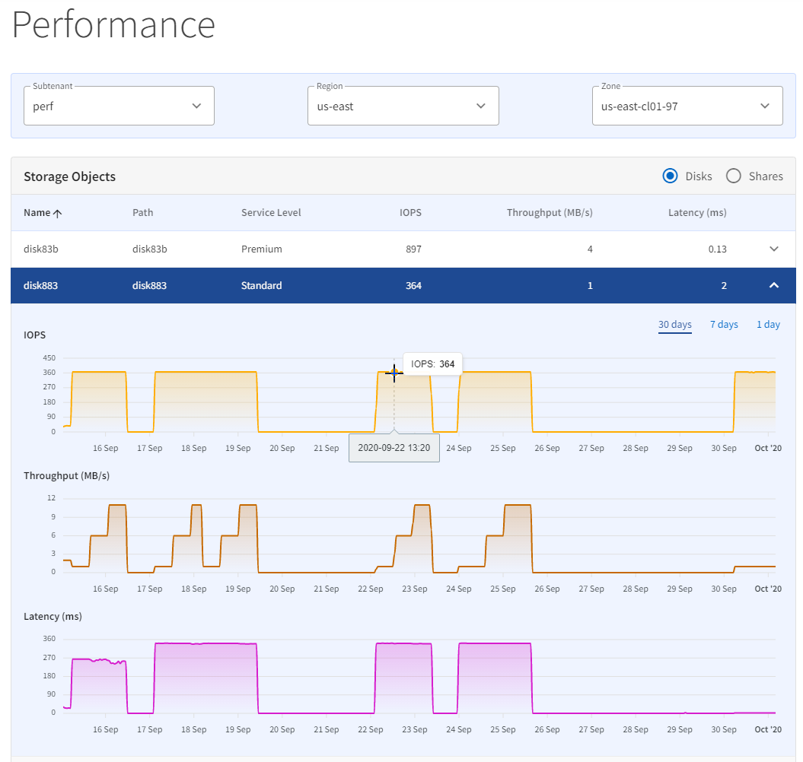

문서 변경 요청
문서 변경 요청 이 페이지 편집
이 페이지 편집 기여하는 방법 자세히 알아보기
기여하는 방법 자세히 알아보기보고서 보기
NetApp Keystone Flex 가입 사용량과 테넌트 사용량에 대한 용량 및 성능 보고서를 생성할 수 있습니다.
Keystone 구독 용량 사용 보고서
Keystone 가입 시 용량 사용량 페이지에는 시간별 가입형 정액제에 따른 각 스토리지 서비스의 용량 사용량이 표시됩니다. NetApp 관리자는 가입 시 모든 테넌트 및 파트너의 용량 사용 보고서를 확인할 수 있습니다. 파트너 관리자는 Flex Subscription 사용에 대한 용량 보고서를 볼 수 있습니다. 이 페이지의 그래픽 보고서를 사용하여 개별 탭에서 모든 스토리지 서비스의 사용 추세와 추가 데이터 보호 서비스를 확인할 수 있습니다. 서비스가 버스트 상태일 때 배너에는 현재 청구 주기에 사용된 버스트 용량이 표시됩니다.

Keystone 가입 용량 사용 페이지를 보려면 메뉴에서 * 보고서 > Keystone 사용 * 을 선택합니다.
서비스의 용량 사용을 보려면 다음 단계를 수행하십시오.
-
가입 * 드롭다운 목록에서 서비스가 포함된 가입 번호를 선택합니다.
-
다른 탭을 선택하여 기본 서비스 수준 또는 데이터 보호 서비스의 용량 사용을 확인할 수 있습니다. 이 페이지에는 기본적으로 서비스 수준 보기가 표시됩니다.
-
페이지를 스크롤하여 서비스를 보고 기간 필터를 사용하여 선택한 기간으로 표시를 제한할 수 있습니다.
테넌트 할당 용량 사용량 보고서
테넌트 구독의 용량 사용 페이지에는 Flex Subscription의 구독된 스토리지 서비스에 대한 각 테넌트의 시간 경과에 따른 용량 사용량이 표시됩니다. 이 페이지는 NetApp, 파트너, 테넌트 또는 고객 관리자가 특정 테넌트의 용량 사용 보고서를 볼 수 있습니다.

|
테넌트 관리자의 경우 페이지가 "용량 사용량"으로 나타납니다. |
이 페이지의 그래픽 보고서를 사용하여 데이터 보호와 같은 추가 서비스 및 모든 스토리지 서비스의 사용 추세를 별도의 탭에서 확인할 수 있습니다. 서비스가 버스트 상태일 때 배너에는 현재 청구 주기에 사용된 버스트 용량이 표시됩니다.
테넌트 구독의 용량 사용 페이지를 보려면 메뉴에서 * 보고서 > 테넌트 사용/용량 사용 * 을 선택합니다.
테넌트의 용량 사용을 보려면 다음 단계를 수행하십시오.
-
가입 드롭다운 목록에서 서비스가 포함된 가입 번호를 선택합니다.
-
각 탭을 선택하여 기본 서비스 수준 또는 데이터 보호 서비스의 용량 사용량을 확인할 수 있습니다. 이 페이지에는 기본적으로 서비스 수준 보기가 표시됩니다.
-
페이지를 스크롤하여 서비스를 보고 기간 필터를 사용하여 선택한 기간으로 표시를 제한할 수 있습니다.
성능 보고서
성능 페이지(아래 이미지에 표시됨)에는 개별 디스크 또는 공유의 성능에 대한 정보가 표시됩니다. 세 가지 성과 측정값에 대한 정보가 표시됩니다.
-
바이트별 초당 입출력 작업 수(IOPS/TiB).
스토리지 디바이스에서 IOPS가 발생하는 속도입니다.
-
처리량(Mbps)
처리량은 스토리지 미디어 간 데이터 전송 속도를 초당 메가바이트 단위로 측정합니다.
-
지연 시간(ms).
디스크/공유에서 읽기/쓰기 평균 시간(밀리초)
성능 페이지를 보려면 메뉴에서 보고서 > 성능 을 선택합니다.
디스크/공유에 대한 성능 세부 정보를 보려면 다음 단계를 수행하십시오.
-
Subtenant *, * Region * 및 * Zone * 을 선택한 다음 스토리지 객체 유형을 선택하여 디스크 또는 공유의 * Disks * 또는 * Shares * 를 표시합니다. 이 페이지에는 선택한 기준을 충족하는 스토리지 객체 목록이 표시되며 해당 객체에 대한 최신 성능 데이터가 표시됩니다.
-
선택한 공유 또는 디스크에 대한 성능 데이터의 추세를 보려면 목록에서 스토리지 객체를 찾은 후 패널을 클릭하여 확장합니다. 선택한 개체의 성능 그래프가 표시됩니다.
-

그래프에는 시간에 따른 스토리지의 성능이 나와 있습니다. 다음을 수행할 수 있습니다.
-
기간 필터를 선택하여 표시할 기간을 선택하거나 그래프를 클릭하고 드래그합니다.
-
그래프의 한 지점 위로 커서를 가져가면 해당 지점에 대한 자세한 정보를 볼 수 있습니다.